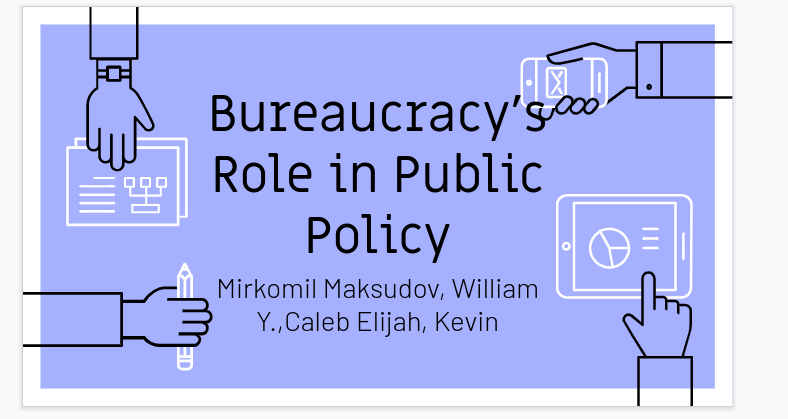
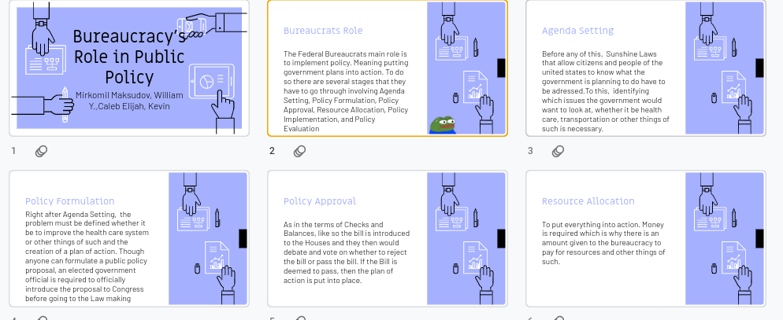
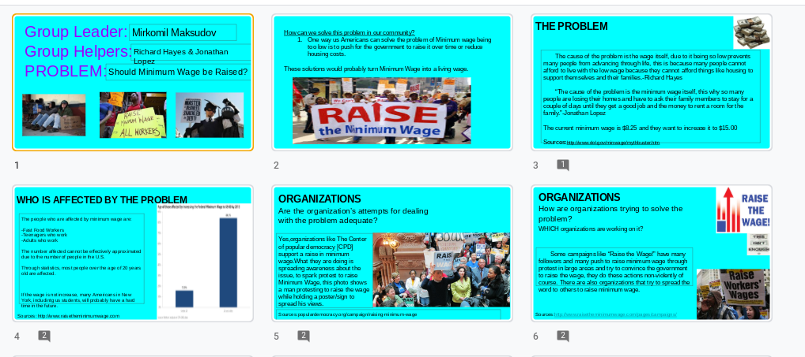

In this project, we had to research the role of bureaucracys. Not just the role of beauracracies but what is a bureaucracies, the process in passing a public policy and such
 In this project, this is a project done in 9th grade, it isn't the best of them but it showed research, we had to research on the topic of minumum wage and organizations that fight to increase it, and statistics on who is affected by it.
